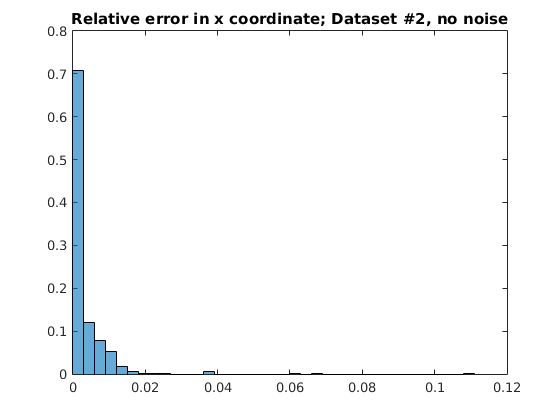
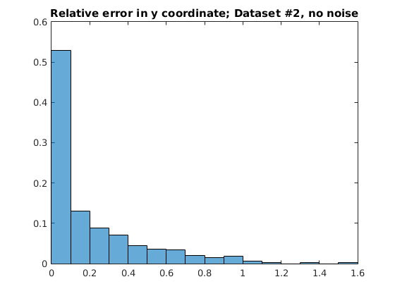
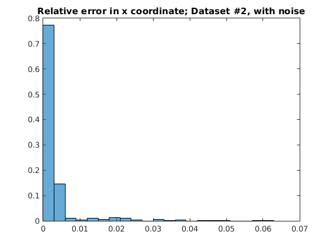
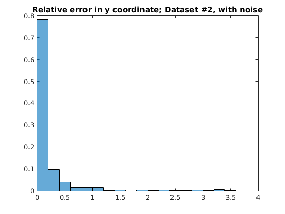

Contents
Part1: first dataset (f2D and f3D)
load('../Calib_data/Features2D_dataset1.mat');
load('../Calib_data/Features3D_dataset1.mat');
M = CameraCalib(f2D',f3D');
disp('Calibration for dataset #1');
disp('M = ');
disp(M);
check = M*(f3D);
f2D_check = abs([check(1,:)./check(3,:);check(2,:)./check(3,:); ...
ones(1,size(check,2))]);
abs_error1 = abs(f2D_check-f2D);
relative_error1 = abs_error1./f2D;
max_error1=max(max(relative_error1));
mean_error1=mean(mean(relative_error1(1:2,:)));
Calibration for dataset #1
M =
0.2905 0.0532 -0.1866 -0.6283
-0.0881 0.3264 -0.0881 -0.6010
-0.0002 -0.0002 -0.0002 0.0021
Part2: first dataset (f2D and f3D)
load('../Calib_data/Features2D_dataset2.mat');
load('../Calib_data/Features3D_dataset2.mat');
M = CameraCalib(f2D',f3D');
disp('Calibration for dataset #2');
disp('M = ');
disp(M);
check = M*(f3D);
f2D_check = abs([check(1,:)./check(3,:);check(2,:)./check(3,:); ...
ones(1,size(check,2))]);
abs_error2 = abs(f2D_check-f2D);
relative_error2 = abs_error2./f2D;
max_error2=max(max(relative_error2));
mean_error2=mean(mean(relative_error2(1:2,:)));
Calibration for dataset #2
M =
0.0087 0.0011 -0.0039 0.9986
0.0001 0.0092 0.0005 -0.0520
-0.0000 -0.0000 -0.0000 -0.0027
Part 2: Adding Gaussian noise on dataset2
sigma_f3D_X = 0.05*max(f3D(1,:));
sigma_f3D_Y = 0.05*max(f3D(2,:));
sigma_f3D_Z = 0.05*max(f3D(3,:));
temp = [1,size(f3D,2)];
noisy_f3D = ones(size(f3D));
noisy_f3D(1,:) = f3D(1,:) + (sigma_f3D_X)*randn(temp);
noisy_f3D(2,:) = f3D(2,:) + (sigma_f3D_Y)*randn(temp);
noisy_f3D(3,:) = f3D(3,:) + (sigma_f3D_Z)*randn(temp);
sigma_f2D_X = 0.05*max(f2D(1,:));
sigma_f2D_Y = 0.05*max(f2D(2,:));
noisy_f2D = ones(size(f2D));
noisy_f2D(1,:) = f2D(1,:) + (sigma_f2D_X)*randn(temp);
noisy_f2D(2,:) = f2D(2,:) + (sigma_f2D_Y)*randn(temp);
M = CameraCalib(noisy_f2D',noisy_f3D');
disp('Calibration for noisy dataset #2');
disp('M = ');
disp(M);
check = M*(f3D);
f2D_check = abs([check(1,:)./check(3,:);check(2,:)./check(3,:); ...
ones(1,size(check,2))]);
abs_error3 = abs(f2D_check-f2D);
relative_error3 = abs_error3./f2D;
max_error3=max(max(relative_error3));
mean_error3=mean(mean(relative_error3(1:2,:)));
Calibration for noisy dataset #2
M =
-0.0005 0.0012 0.0036 -0.9573
0.0016 -0.0027 0.0012 -0.2891
-0.0000 -0.0000 -0.0000 0.0022
Error analysis for dataset2 with and without noise
figure(1)
histogram(relative_error2(1,:),'Normalization','probability');
title('Relative error in x coordinate; Dataset #2, no noise');
figure(2)
histogram(relative_error3(1,:),'Normalization','probability');
title('Relative error in y coordinate; Dataset #2, no noise');
figure(3)
histogram(relative_error2(2,:),'Normalization','probability');
title('Relative error in x coordinate; Dataset #2, with noise');
figure(4)
histogram(relative_error3(2,:),'Normalization','probability');
title('Relative error in y coordinate; Dataset #2, with noise');
   